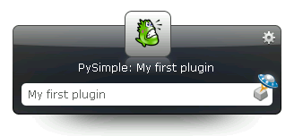

This document describes how to write a simple Launchy plugin using pylaunchy.
This is the simplest plugin you can build that will actually do something. The code is taken from the pysimple.py which is distributed with pylaunchy.
Running the plugin is simple:
- Put the pysimple.py file in <Launchy>\plugins\python (Replace <Launchy> with your Launchy install path, e.g. C:\Program Files\Launchy\plugins\python).
- Restart Launchy
- Hit Alt+Space
- Type My simple plugin
- Hit Enter
You should see the following image :

Also, check the file stdout.txt in <Launchy>\plugins\python. It should have the following line -
I was asked to launch: My simple plugin
1 2 3 4 5 6 7 8 9 10 11 12 13 14 15 16 17 18 19 20 21 22 23 24 25 26 27 28 29 30 31 32 33 34 35 36 37 38 39 40 41 | import launchy ### 1
class PySimple(launchy.Plugin):
def __init__(self):
launchy.Plugin.__init__(self) ### 2
self.name = "PySimple" ### 3
self.hash = launchy.hash(self.name)
self.icon = os.path.join(launchy.getIconsPath(), "pysimple.png")
def init(self):
pass
def getID(self):
return self.hash
def getName(self):
return self.name
def getIcon(self):
return self.icon
def getLabels(self, inputDataList):
pass
def getResults(self, inputDataList, resultsList):
# Take the text from the first input item and add a new
# Catalog item with our plugin id
text = inputDataList[0].getText() ### 4
resultsList.push_back( launchy.CatItem(text,
"PySimple: " + text,
self.getID(), self.getIcon()) ) ### 5
def getCatalog(self, resultsList):
pass
def launchItem(self, inputDataList, catItemOrig):
# The user chose our catalog item, print it
catItem = inputDataList[-1].getTopResult() ### 6
print "I was asked to launch: ", catItem.fullPath ### 7
launchy.registerPlugin(PySimple) ### 8
|
The following refer to the ### 1 comments in the code.
- The launchy module contains the required classes and functions for writing a Launchy plugin in Python.
- launchy.Plugin must be initialized, or your plugin won’t get loaded.
- The name, hash ID and icon of the plugin, all required by Launchy, are defined for later use. They are returned by functions called by Launchy and the plugin itself.
- Text is retrieved from the first input data. This is what the user has typed without clicking Tab
- A new catalog item is created, containing the user text and some more. Note the usage of getID(), it tells Launchy which plugin to use in case the user has selected this item.
- Get the best catalog item for the search query. See launchy.InputData for more details.
- Print something from the catalog item. Since PyLaunchy has no console to write to, the print output can be seen in the file stdout.txt in <Launchy>\plugins\python
- The plugin class must be registered in order to work.